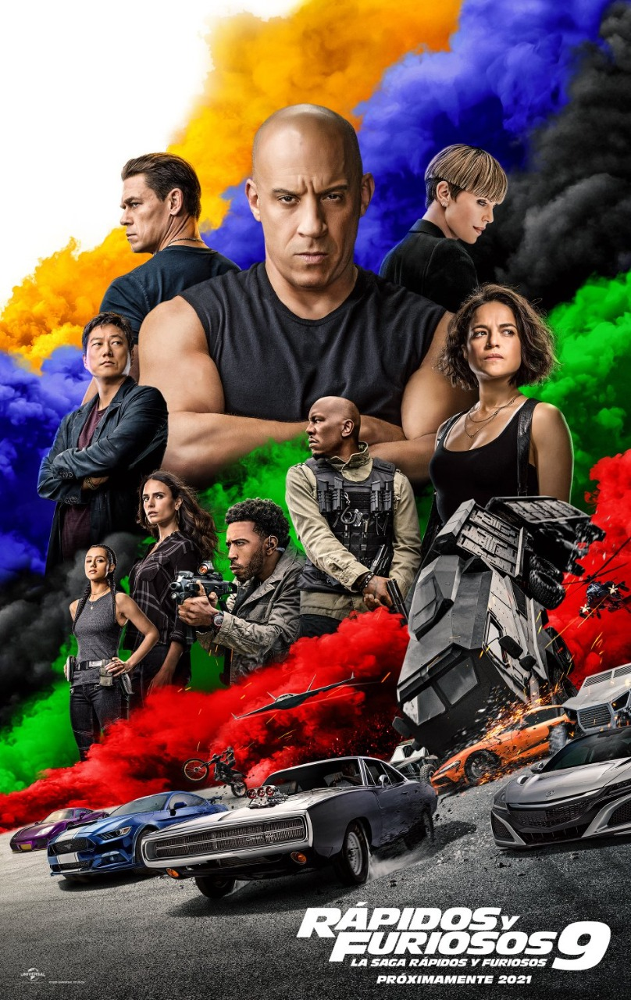
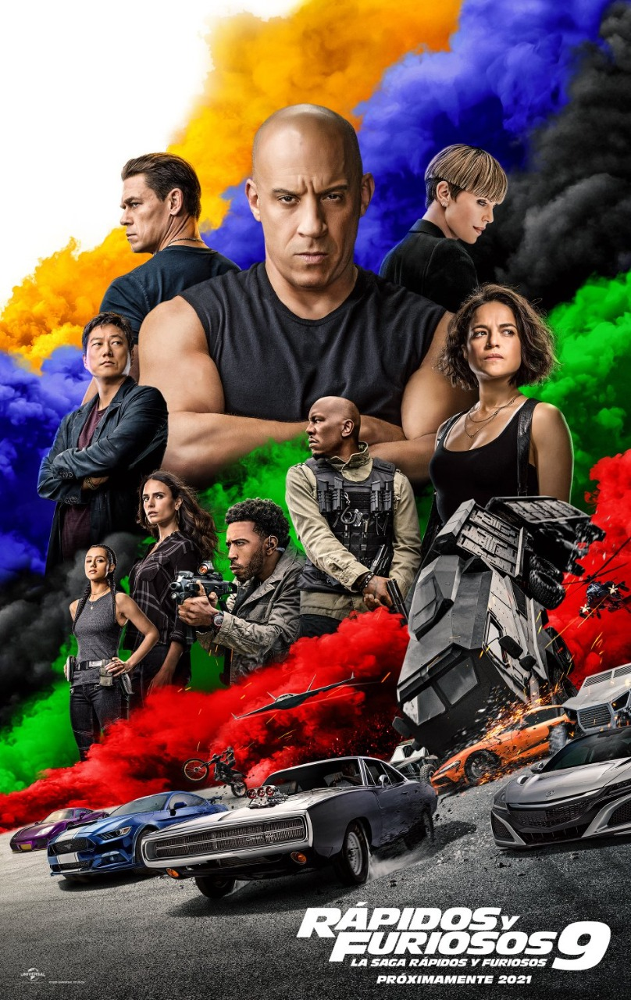

Kimetsu no Yaiba: Mugen Ressha-hen es
una película de anime japonesa de 2020 basada
en la serie de manga shōnen Kimetsu no
Yaiba de Koyoharu Gotōge. La película, que es
una secuela directa de la serie de anime
de 2019, está dirigida por Haruo Sotozaki y
producida por Ufotable.
|
F9 es una película de acción
estadounidense de 2021 dirigida por Justin Lin
y escrita por Daniel Casey. La película es
protagonizada por Vin Diesel, Michelle Rodriguez,
Charlize Theron, Jordana Brewster, Tyrese Gibson,
Chris "Ludacris" Bridges, Nathalie Emmanuel,
John Cena, Sung Kang, Lucas Black y Helen Mirren.
|
Space Jam: A New Legacy es una próxima película
de comedia deportiva estadounidense de imagen real/animada
de 2021 y una secuela directa de Space Jam. La película
está dirigida por Malcolm D. Lee y protagonizada por el
jugador de baloncesto LeBron James, así como por Don
Cheadle y Sonequa Martin-Green
|
Fecha de estreno: 20 de mayo de 2021
|
Fecha de estreno: 24 de junio de 2021
|
Fecha de estreno: 14 de julio de 202
|
Reparto: Akari Kitō, Yoshitsugu Matsuoka, Junya Enoki...
|
Productoras: Universal Studios, One Race Films...
|
Adaptaciones de: Space Jam: el juego del siglo, Looney Tunes
|
 
